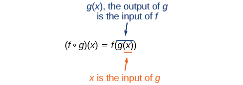
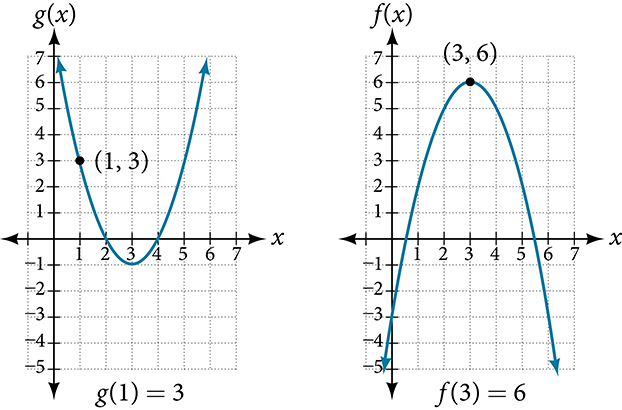
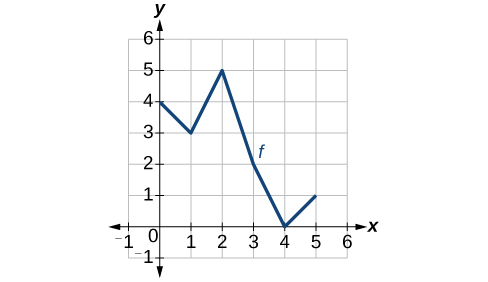
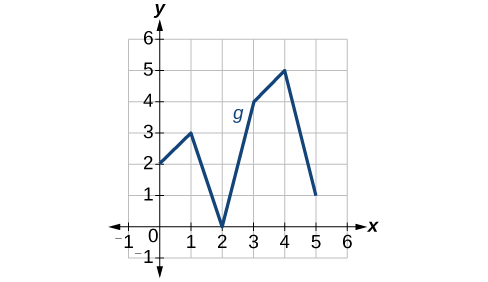
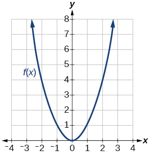
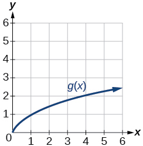
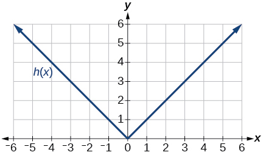
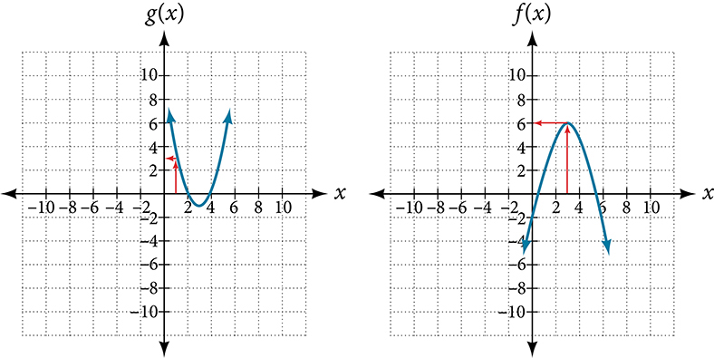

Composition of Functions
Suppose we want to calculate how much it costs to heat a house on a particular day of the year. The cost to heat a house will depend on the average daily temperature, and in turn, the average daily temperature depends on the particular day of the year. Notice how we have just defined two relationships: The cost depends on the temperature, and the temperature depends on the day.
Using descriptive variables, we can notate these two functions. The function gives the cost of heating a house for a given average daily temperature in degrees Celsius. The function gives the average daily temperature on day of the year. For any given day, means that the cost depends on the temperature, which in turns depends on the day of the year. Thus, we can evaluate the cost function at the temperature For example, we could evaluate to determine the average daily temperature on the 5th day of the year. Then, we could evaluate the cost function at that temperature. We would write
By combining these two relationships into one function, we have performed function composition, which is the focus of this section.
Combining Functions Using Algebraic Operations
Function composition is only one way to combine existing functions. Another way is to carry out the usual algebraic operations on functions, such as addition, subtraction, multiplication and division. We do this by performing the operations with the function outputs, defining the result as the output of our new function.
Suppose we need to add two columns of numbers that represent a husband and wife’s separate annual incomes over a period of years, with the result being their total household income. We want to do this for every year, adding only that year’s incomes and then collecting all the data in a new column. If is the wife’s income and is the husband’s income in year and we want to represent the total income, then we can define a new function.
If this holds true for every year, then we can focus on the relation between the functions without reference to a year and write
Just as for this sum of two functions, we can define difference, product, and ratio functions for any pair of functions that have the same kinds of inputs (not necessarily numbers) and also the same kinds of outputs (which do have to be numbers so that the usual operations of algebra can apply to them, and which also must have the same units or no units when we add and subtract). In this way, we can think of adding, subtracting, multiplying, and dividing functions.
For two functions and with real number outputs, we define new functions and by the relations
Performing Algebraic Operations on Functions
Find and simplify the functions and given and Are they the same function?
Solution
Begin by writing the general form, and then substitute the given functions.
No, the functions are not the same.
Note: For the condition is necessary because when the denominator is equal to 0, which makes the function undefined.
Create a Function by Composition of Functions
Performing algebraic operations on functions combines them into a new function, but we can also create functions by composing functions. When we wanted to compute a heating cost from a day of the year, we created a new function that takes a day as input and yields a cost as output. The process of combining functions so that the output of one function becomes the input of another is known as a composition of functions. The resulting function is known as a composite function. We represent this combination by the following notation:
We read the left-hand side as composed with at and the right-hand side as of of The two sides of the equation have the same mathematical meaning and are equal. The open circle symbol is called the composition operator. We use this operator mainly when we wish to emphasize the relationship between the functions themselves without referring to any particular input value. Composition is a binary operation that takes two functions and forms a new function, much as addition or multiplication takes two numbers and gives a new number. However, it is important not to confuse function composition with multiplication because, as we learned above, in most cases
It is also important to understand the order of operations in evaluating a composite function. We follow the usual convention with parentheses by starting with the innermost parentheses first, and then working to the outside. In the equation above, the function takes the input first and yields an output Then the function takes as an input and yields an output

In general, and are different functions. In other words, in many cases for all We will also see that sometimes two functions can be composed only in one specific order.
For example, if and then
but
These expressions are not equal for all values of so the two functions are not equal. It is irrelevant that the expressions happen to be equal for the single input value
Note that the range of the inside function (the first function to be evaluated) needs to be within the domain of the outside function. Less formally, the composition has to make sense in terms of inputs and outputs.
Determining whether Composition of Functions is Commutative
Using the functions provided, find and Determine whether the composition of the functions is commutative.
Solution
Let’s begin by substituting into
Now we can substitute into
We find that so the operation of function composition is not commutative.
Interpreting Composite Functions
The function gives the number of calories burned completing sit-ups, and gives the number of sit-ups a person can complete in minutes. Interpret
Solution
The inside expression in the composition is Because the input to the s-function is time, represents 3 minutes, and is the number of sit-ups completed in 3 minutes.
Using as the input to the function gives us the number of calories burned during the number of sit-ups that can be completed in 3 minutes, or simply the number of calories burned in 3 minutes (by doing sit-ups).
Investigating the Order of Function Composition
Suppose gives miles that can be driven in hours and gives the gallons of gas used in driving miles. Which of these expressions is meaningful: or
Solution
The function is a function whose output is the number of miles driven corresponding to the number of hours driven.
The function is a function whose output is the number of gallons used corresponding to the number of miles driven. This means:
The expression takes miles as the input and a number of gallons as the output. The function requires a number of hours as the input. Trying to input a number of gallons does not make sense. The expression is meaningless.
The expression takes hours as input and a number of miles driven as the output. The function requires a number of miles as the input. Using (miles driven) as an input value for where gallons of gas depends on miles driven, does make sense. The expression makes sense, and will yield the number of gallons of gas used, driving a certain number of miles, in hours.
Evaluating Composite Functions
Once we compose a new function from two existing functions, we need to be able to evaluate it for any input in its domain. We will do this with specific numerical inputs for functions expressed as tables, graphs, and formulas and with variables as inputs to functions expressed as formulas. In each case, we evaluate the inner function using the starting input and then use the inner function’s output as the input for the outer function.
Evaluating Composite Functions Using Tables
When working with functions given as tables, we read input and output values from the table entries and always work from the inside to the outside. We evaluate the inside function first and then use the output of the inside function as the input to the outside function.
Using a Table to Evaluate a Composite Function
Using Table 1, evaluate and
| 1 | 6 | 3 |
| 2 | 8 | 5 |
| 3 | 3 | 2 |
| 4 | 1 | 7 |
Solution
To evaluate we start from the inside with the input value 3. We then evaluate the inside expression using the table that defines the function We can then use that result as the input to the function so is replaced by 2 and we get Then, using the table that defines the function we find that
To evaluate we first evaluate the inside expression using the first table: Then, using the table for we can evaluate
Table 2 shows the composite functions and as tables.
| 3 | 2 | 8 | 3 | 2 |
Evaluating Composite Functions Using Graphs
When we are given individual functions as graphs, the procedure for evaluating composite functions is similar to the process we use for evaluating tables. We read the input and output values, but this time, from the and axes of the graphs.
Solution
To evaluate we start with the inside evaluation. See Figure 2.

We evaluate using the graph of finding the input of 1 on the axis and finding the output value of the graph at that input. Here, We use this value as the input to the function
We can then evaluate the composite function by looking to the graph of finding the input of 3 on the axis and reading the output value of the graph at this input. Here, so
Evaluating Composite Functions Using Formulas
When evaluating a composite function where we have either created or been given formulas, the rule of working from the inside out remains the same. The input value to the outer function will be the output of the inner function, which may be a numerical value, a variable name, or a more complicated expression.
While we can compose the functions for each individual input value, it is sometimes helpful to find a single formula that will calculate the result of a composition To do this, we will extend our idea of function evaluation. Recall that, when we evaluate a function like we substitute the value inside the parentheses into the formula wherever we see the input variable.
Evaluating a Composition of Functions Expressed as Formulas with a Numerical Input
Given and evaluate
Solution
Because the inside expression is we start by evaluating at 1.
Then so we evaluate at an input of 5.
Analysis
It makes no difference what the input variables and were called in this problem because we evaluated for specific numerical values.
Finding the Domain of a Composite Function
As we discussed previously, the domain of a composite function such as is dependent on the domain of and the domain of It is important to know when we can apply a composite function and when we cannot, that is, to know the domain of a function such as Let us assume we know the domains of the functions and separately. If we write the composite function for an input as we can see right away that must be a member of the domain of in order for the expression to be meaningful, because otherwise we cannot complete the inner function evaluation. However, we also see that must be a member of the domain of otherwise the second function evaluation in cannot be completed, and the expression is still undefined. Thus the domain of consists of only those inputs in the domain of that produce outputs from belonging to the domain of Note that the domain of composed with is the set of all such that is in the domain of and is in the domain of
Finding the Domain of a Composite Function
Find the domain of
Solution
The domain of consists of all real numbers except since that input value would cause us to divide by 0. Likewise, the domain of consists of all real numbers except 1. So we need to exclude from the domain of that value of for which
So the domain of is the set of all real numbers except and This means that
We can write this in interval notation as
Finding the Domain of a Composite Function Involving Radicals
Find the domain of
Solution
Because we cannot take the square root of a negative number, the domain of is Now we check the domain of the composite function
For since the radicand of a square root must be positive. Since square roots are positive, or, which gives a domain of .
Analysis
This example shows that knowledge of the range of functions (specifically the inner function) can also be helpful in finding the domain of a composite function. It also shows that the domain of can contain values that are not in the domain of though they must be in the domain of
Decomposing a Composite Function into its Component Functions
In some cases, it is necessary to decompose a complicated function. In other words, we can write it as a composition of two simpler functions. There may be more than one way to decompose a composite function, so we may choose the decomposition that appears to be most expedient.
Decomposing a Function
Write as the composition of two functions.
Solution
We are looking for two functions, and so To do this, we look for a function inside a function in the formula for As one possibility, we might notice that the expression is the inside of the square root. We could then decompose the function as
We can check our answer by recomposing the functions.
Key Equation
| Composite function |
Key Concepts
- We can perform algebraic operations on functions. See Example 1.
- When functions are composed, the output of the first (inner) function becomes the input of the second (outer) function.
- The function produced by composing two functions is a composite function. See Example 2 and Example 3.
- The order of function composition must be considered when interpreting the meaning of composite functions. See Example 4.
- A composite function can be evaluated by evaluating the inner function using the given input value and then evaluating the outer function taking as its input the output of the inner function.
- A composite function can be evaluated from a table. See Example 5.
- A composite function can be evaluated from a graph. See Example 6.
- A composite function can be evaluated from a formula. See Example 7.
- The domain of a composite function consists of those inputs in the domain of the inner function that correspond to outputs of the inner function that are in the domain of the outer function. See Example 8 and Example 9.
- Just as functions can be combined to form a composite function, composite functions can be decomposed into simpler functions.
- Functions can often be decomposed in more than one way. See Example 10.
Section Exercises
Verbal
How does one find the domain of the quotient of two functions,
Solution
Find the numbers that make the function in the denominator equal to zero, and check for any other domain restrictions on and such as an even-indexed root or zeros in the denominator.
What is the composition of two functions,
If the order is reversed when composing two functions, can the result ever be the same as the answer in the original order of the composition? If yes, give an example. If no, explain why not.
Solution
Yes. Sample answer: Let Then and So
How do you find the domain for the composition of two functions,
Algebraic
Given and find and Determine the domain for each function in interval notation.
Solution
domain:
domain:
domain:
domain:
Given and find and Determine the domain for each function in interval notation.
Given and find and Determine the domain for each function in interval notation.
Solution
domain:
domain:
domain:
domain:
Given and find and Determine the domain for each function in interval notation.
Given and find and Determine the domain for each function in interval notation.
Solution
domain:
domain:
domain:
domain:
Given and find Determine the domain of the function in interval notation.
Given and find the following:
- ⓐ
- ⓑ
- ⓒ
- ⓓ
- ⓔ
Solution
- ⓐ 3
- ⓑ
- ⓒ
- ⓓ
- ⓔ
For the following exercises, use each pair of functions to find and Simplify your answers.
Solution
Solution
Solution
For the following exercises, use each set of functions to find Simplify your answers.
and
and
Solution
Given and find the following:
- ⓐ
- ⓑ the domain of in interval notation
- ⓒ
- ⓓ the domain of
- ⓔ
Given and find the following:
- ⓐ
- ⓑ the domain of in interval notation
Solution
- ⓐ Text
- ⓑ
Given the functions find the following:
- ⓐ
- ⓑ
Given functions and state the domain of each of the following functions using interval notation:
- ⓐ
- ⓑ
- ⓒ
Solution
- ⓐ
- ⓑ c.
Given functions and state the domain of each of the following functions using interval notation.
- ⓐ
- ⓑ
- ⓒ
For and write the domain of in interval notation.
Solution
For the following exercises, find functions and so the given function can be expressed as
Solution
sample:
Solution
sample:
Solution
sample:
Solution
sample:
Solution
sample:
Solution
sample:
Solution
sample:
Solution
sample:
Graphical
For the following exercises, use the graphs of shown in Figure 4, and shown in Figure 5, to evaluate the expressions.


Solution
2
Solution
5
Solution
4
Solution
0
For the following exercises, use graphs of shown in Figure 6, shown in Figure 7, and shown in Figure 8, to evaluate the expressions.



Solution
2
Solution
1
Solution
4
Solution
4
Numeric
For the following exercises, use the function values for shown in Table 3 to evaluate each expression.
| 0 | 7 | 9 |
| 1 | 6 | 5 |
| 2 | 5 | 6 |
| 3 | 8 | 2 |
| 4 | 4 | 1 |
| 5 | 0 | 8 |
| 6 | 2 | 7 |
| 7 | 1 | 3 |
| 8 | 9 | 4 |
| 9 | 3 | 0 |
Solution
9
Solution
4
Solution
2
Solution
3
For the following exercises, use the function values for shown in Table 4 to evaluate the expressions.
| -3 | 11 | -8 |
| -2 | 9 | -3 |
| -1 | 7 | 0 |
| 0 | 5 | 1 |
| 1 | 3 | 0 |
| 2 | 1 | -3 |
| 3 | -1 | -8 |
Solution
11
Solution
0
Solution
7
For the following exercises, use each pair of functions to find and
Solution
Solution
For the following exercises, use the functions and to evaluate or find the composite function as indicated.
Solution
Solution
Extensions
For the following exercises, use and
Find and Compare the two answers.
Find and
Solution
2
What is the domain of
What is the domain of
Solution
Let
- ⓐ Find
- ⓑ Is for any function the same result as the answer to part (a) for any function? Explain.
For the following exercises, let and
True or False:
Solution
False
True or False:
For the following exercises, find the composition when for all and
Solution
;
Solution
Real-World Applications
The function gives the number of items that will be demanded when the price is The production cost is the cost of producing items. To determine the cost of production when the price is $6, you would do which of the following?
- ⓐ Evaluate
- ⓑ Evaluate
- ⓒ Solve
- ⓓ Solve
The function gives the pain level on a scale of 0 to 10 experienced by a patient with milligrams of a pain-reducing drug in her system. The milligrams of the drug in the patient’s system after minutes is modeled by Which of the following would you do in order to determine when the patient will be at a pain level of 4?
- ⓐ Evaluate
- ⓑ Evaluate
- ⓒ Solve
- ⓓ Solve
Solution
c
A store offers customers a 30% discount on the price of selected items. Then, the store takes off an additional 15% at the cash register. Write a price function that computes the final price of the item in terms of the original price (Hint: Use function composition to find your answer.)
A rain drop hitting a lake makes a circular ripple. If the radius, in inches, grows as a function of time in minutes according to find the area of the ripple as a function of time. Find the area of the ripple at
Solution
and square inches
A forest fire leaves behind an area of grass burned in an expanding circular pattern. If the radius of the circle of burning grass is increasing with time according to the formula express the area burned as a function of time, (minutes).
Use the function you found in the previous exercise to find the total area burned after 5 minutes.
Solution
square units
The radius in inches, of a spherical balloon is related to the volume, by Air is pumped into the balloon, so the volume after seconds is given by
- ⓐ Find the composite function
- ⓑ Find the exact time when the radius reaches 10 inches.
The number of bacteria in a refrigerated food product is given by where is the temperature of the food. When the food is removed from the refrigerator, the temperature is given by where is the time in hours.
- ⓐ Find the composite function
- ⓑ Find the time (round to two decimal places) when the bacteria count reaches 6752.
Solution
- ⓐ
- ⓑ 3.38 hours
Analysis
Figure 3 shows how we can mark the graphs with arrows to trace the path from the input value to the output value.
